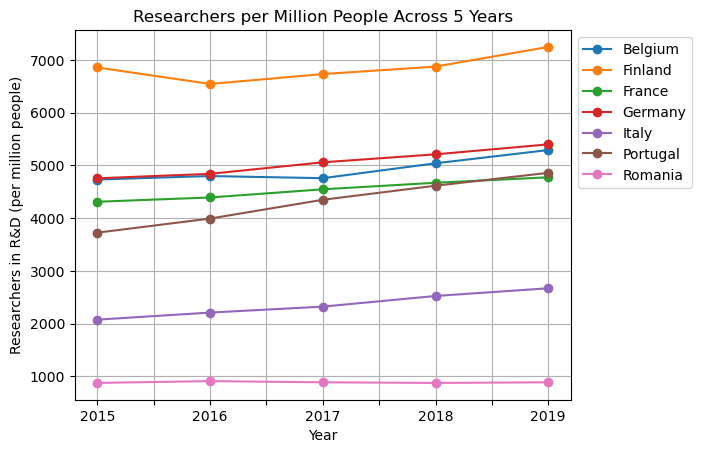
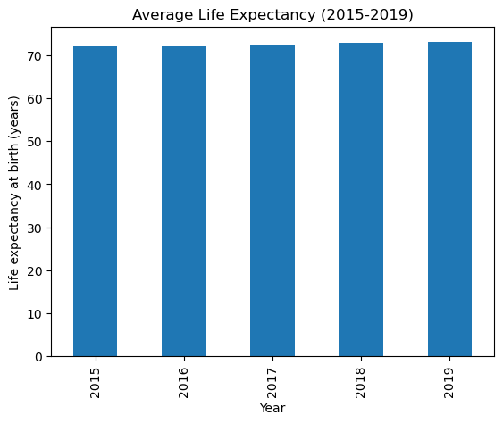
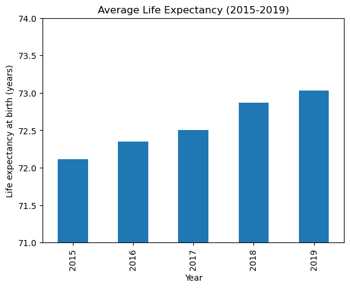

Code
import numpy as np
import pandas as pd
import matplotlib.pyplot as plt
import seaborn as sns
import plotly.express as px
import altair as alt
from sklearn.datasets import load_irisimport numpy as np
import pandas as pd
import matplotlib.pyplot as plt
import seaborn as sns
import plotly.express as px
import altair as alt
from sklearn.datasets import load_iriswb = pd.read_csv("Data/WBnew.csv")
new_column_names = {'2015 [YR2015]': '2015', '2016 [YR2016]': '2016', '2017 [YR2017]': '2017', '2018 [YR2018]': '2018', '2019 [YR2019]': '2019'}
wb1519 = wb.rename(columns=new_column_names)
wb1519 = wb1519.drop(columns=['2005 [YR2005]', '2006 [YR2006]', '2007 [YR2007]', '2008 [YR2008]', '2009 [YR2009]', '2010 [YR2010]', '2011 [YR2011]', '2012 [YR2012]', '2013 [YR2013]', '2014 [YR2014]', '2020 [YR2020]', '2021 [YR2021]', '2022 [YR2022]', '2023 [YR2023]', '2024 [YR2024]'])
wb1519.head()| Country Name | Country Code | Series Name | Series Code | 2015 | 2016 | 2017 | 2018 | 2019 | |
|---|---|---|---|---|---|---|---|---|---|
| 0 | Afghanistan | AFG | GDP per capita (current US$) | NY.GDP.PCAP.CD | 565.569730408751 | 522.082215583898 | 525.469770891619 | 491.337221382603 | 496.6025042585 |
| 1 | Afghanistan | AFG | Hospital beds (per 1,000 people) | SH.MED.BEDS.ZS | 0.44 | 0.45 | 0.42 | 0.4 | 0.38 |
| 2 | Afghanistan | AFG | Life expectancy at birth, total (years) | SP.DYN.LE00.IN | 62.27 | 62.646 | 62.406 | 62.443 | 62.941 |
| 3 | Afghanistan | AFG | Net migration | SM.POP.NETM | -286314 | -143049 | -71491 | -36753 | 9159 |
| 4 | Afghanistan | AFG | Secure Internet servers (per 1 million people) | IT.NET.SECR.P6 | 2.18729357416894 | 12.2764405423167 | 44.1873650754779 | 53.4795175761047 | 27.6573503133086 |
wbmelt = pd.melt(wb1519, id_vars=['Country Name','Series Name'], value_vars=['2015', '2016', '2017', '2018', '2019'], var_name='Year', value_name='Value')
wbmelt = wbmelt.dropna()
wbpivot = wbmelt.pivot(index=['Country Name', 'Year'], columns='Series Name', values='Value').reset_index()
wbpivot = wbpivot.dropna(axis=1, how='all')
wbpivot.head()| Series Name | Country Name | Year | GDP per capita (current US$) | Hospital beds (per 1,000 people) | Income share held by highest 10% | Life expectancy at birth, total (years) | Net migration | Real interest rate (%) | Researchers in R&D (per million people) | Secure Internet servers (per 1 million people) |
|---|---|---|---|---|---|---|---|---|---|---|
| 0 | Afghanistan | 2015 | 565.569730408751 | 0.44 | .. | 62.27 | -286314 | 12.2525481629518 | .. | 2.18729357416894 |
| 1 | Afghanistan | 2016 | 522.082215583898 | 0.45 | .. | 62.646 | -143049 | 17.5839381624543 | .. | 12.2764405423167 |
| 2 | Afghanistan | 2017 | 525.469770891619 | 0.42 | .. | 62.406 | -71491 | 12.1411782956513 | .. | 44.1873650754779 |
| 3 | Afghanistan | 2018 | 491.337221382603 | 0.4 | .. | 62.443 | -36753 | .. | .. | 53.4795175761047 |
| 4 | Afghanistan | 2019 | 496.6025042585 | 0.38 | .. | 62.941 | 9159 | .. | .. | 27.6573503133086 |
wbEU = wbpivot[wbpivot['Country Name'].isin(['Germany', 'France', 'Italy', 'Romania', 'Portugal', 'Finland', 'Belgium'])]
wbEU['Researchers in R&D (per million people)'] = pd.to_numeric(wbEU['Researchers in R&D (per million people)'])
RDpivot = wbEU.pivot(index='Year', columns='Country Name', values='Researchers in R&D (per million people)')
plt.figure(figsize=(10,6))
RDpivot.plot(marker='o', title="Researchers per Million People Across 5 Years")
plt.xlabel("Year")
plt.ylabel("Researchers in R&D (per million people)")
plt.legend(loc='upper left', bbox_to_anchor=(1.0, 1.0))
plt.grid(True)
plt.show()/var/folders/9b/bb7yf3dj4qzbc23czfb1z3rh0000gn/T/ipykernel_90174/3833595271.py:2: SettingWithCopyWarning:
A value is trying to be set on a copy of a slice from a DataFrame.
Try using .loc[row_indexer,col_indexer] = value instead
See the caveats in the documentation: https://pandas.pydata.org/pandas-docs/stable/user_guide/indexing.html#returning-a-view-versus-a-copy
wbEU['Researchers in R&D (per million people)'] = pd.to_numeric(wbEU['Researchers in R&D (per million people)'])<Figure size 1000x600 with 0 Axes>
wbpivot['Life expectancy at birth, total (years)'] = pd.to_numeric(wbpivot['Life expectancy at birth, total (years)'])
yravg = wbpivot.groupby("Year")["Life expectancy at birth, total (years)"].mean().reset_index(name="Average Life Expectancy")
yravg.plot(x="Year", y="Average Life Expectancy", kind="bar", title="Average Life Expectancy (2015-2019)", legend=False)
plt.ylabel("Life expectancy at birth (years)")
plt.show()
yravg.plot(x="Year", y="Average Life Expectancy", kind="bar", title="Average Life Expectancy (2015-2019)", legend=False)
plt.ylim(71, 74)
plt.ylabel("Life expectancy at birth (years)")
plt.show()

wbpivot['Hospital beds (per 1,000 people)'] = pd.to_numeric(wbpivot['Hospital beds (per 1,000 people)'], errors='coerce')
healthAgg = wbpivot.groupby("Country Name")[["Life expectancy at birth, total (years)", "Hospital beds (per 1,000 people)"]].mean().reset_index()
alt.Chart(healthAgg).mark_circle().encode(
x='Hospital beds (per 1,000 people):Q',
y='Life expectancy at birth, total (years):Q',
tooltip=['Country Name','Life expectancy at birth, total (years)','Hospital beds (per 1,000 people)']
).interactive().properties(title='Life Expectancy vs Hospital Beds (2015-2019 Average)')/opt/anaconda3/lib/python3.10/site-packages/altair/utils/core.py:395: FutureWarning: the convert_dtype parameter is deprecated and will be removed in a future version. Do ``ser.astype(object).apply()`` instead if you want ``convert_dtype=False``.
col = df[col_name].apply(to_list_if_array, convert_dtype=False)wbscatter = wbpivot[wbpivot['Year'] == '2015']
alt.Chart(wbscatter).mark_circle().encode(
x='Income share held by highest 10%:Q',
y='GDP per capita (current US$):Q',
tooltip=['Country Name','Year','GDP per capita (current US$)','Income share held by highest 10%']
).interactive().properties(title='GDP per Capita and Income Share of Top 10% in 2015')/opt/anaconda3/lib/python3.10/site-packages/altair/utils/core.py:395: FutureWarning: the convert_dtype parameter is deprecated and will be removed in a future version. Do ``ser.astype(object).apply()`` instead if you want ``convert_dtype=False``.
col = df[col_name].apply(to_list_if_array, convert_dtype=False)
/opt/anaconda3/lib/python3.10/site-packages/altair/utils/core.py:395: FutureWarning: the convert_dtype parameter is deprecated and will be removed in a future version. Do ``ser.astype(object).apply()`` instead if you want ``convert_dtype=False``.
col = df[col_name].apply(to_list_if_array, convert_dtype=False)
/opt/anaconda3/lib/python3.10/site-packages/altair/utils/core.py:395: FutureWarning: the convert_dtype parameter is deprecated and will be removed in a future version. Do ``ser.astype(object).apply()`` instead if you want ``convert_dtype=False``.
col = df[col_name].apply(to_list_if_array, convert_dtype=False)
/opt/anaconda3/lib/python3.10/site-packages/altair/utils/core.py:395: FutureWarning: the convert_dtype parameter is deprecated and will be removed in a future version. Do ``ser.astype(object).apply()`` instead if you want ``convert_dtype=False``.
col = df[col_name].apply(to_list_if_array, convert_dtype=False)
/opt/anaconda3/lib/python3.10/site-packages/altair/utils/core.py:395: FutureWarning: the convert_dtype parameter is deprecated and will be removed in a future version. Do ``ser.astype(object).apply()`` instead if you want ``convert_dtype=False``.
col = df[col_name].apply(to_list_if_array, convert_dtype=False)
/opt/anaconda3/lib/python3.10/site-packages/altair/utils/core.py:395: FutureWarning: the convert_dtype parameter is deprecated and will be removed in a future version. Do ``ser.astype(object).apply()`` instead if you want ``convert_dtype=False``.
col = df[col_name].apply(to_list_if_array, convert_dtype=False)
/opt/anaconda3/lib/python3.10/site-packages/altair/utils/core.py:395: FutureWarning: the convert_dtype parameter is deprecated and will be removed in a future version. Do ``ser.astype(object).apply()`` instead if you want ``convert_dtype=False``.
col = df[col_name].apply(to_list_if_array, convert_dtype=False)
/opt/anaconda3/lib/python3.10/site-packages/altair/utils/core.py:395: FutureWarning: the convert_dtype parameter is deprecated and will be removed in a future version. Do ``ser.astype(object).apply()`` instead if you want ``convert_dtype=False``.
col = df[col_name].apply(to_list_if_array, convert_dtype=False)